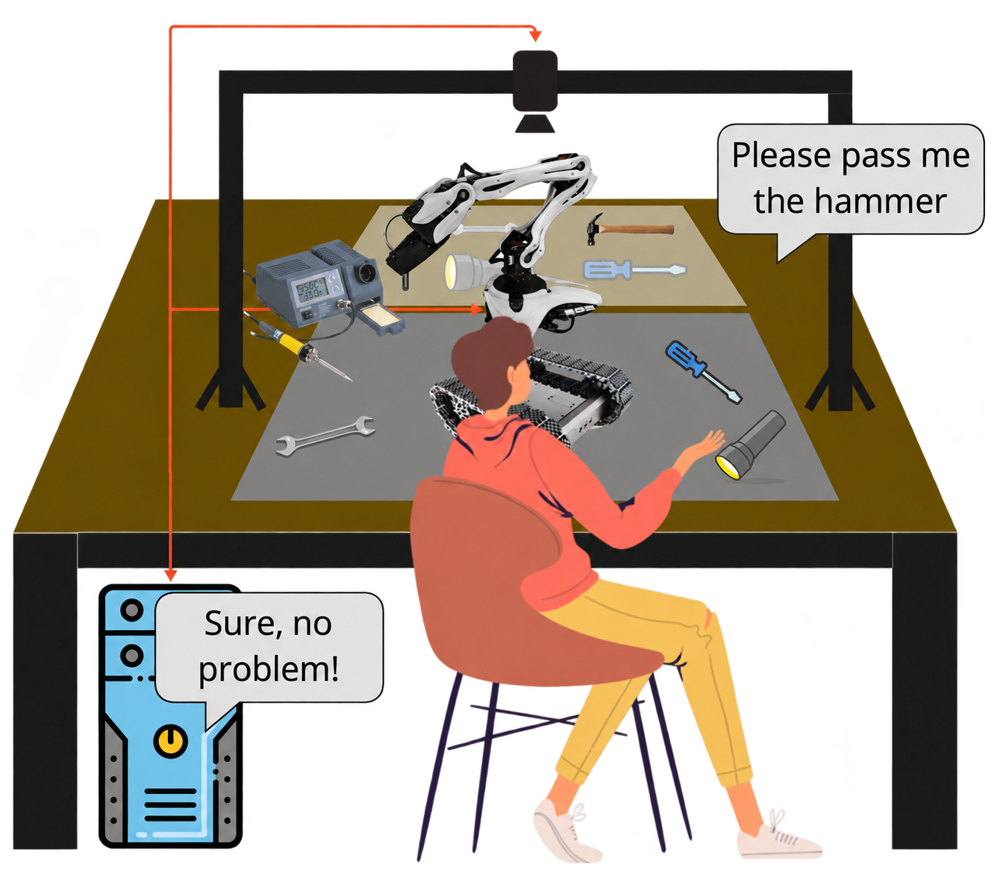

Voice-controlled cobot system
A team-built prototype for retrieving and putting away two tools through predefined spoken commands.
- Project period
- 10/2024 – 03/2025 6 mos
- Context
- BSc course: Service and Industry Robotics at TH Köln
- Status
- Functional feasibility prototype
- My contribution
- System architecture and arm-control optimisation
- In collaboration with
- Lukas Sondenheimer Denis Tolkovets Timon Lübken Fabio Jain
- Guidance by:
- Nicolas KaulenArtur Fuchs
A demonstrated speech-to-tool workflow with separate subsystem tests and unresolved object-placement, execution-speed and safety limitations.

From a spoken request to a handled tool
Asking for a tool is a simple interaction for a person, but a robot has to connect language, perception and movement to carry it out. This project brought those steps together: interpreting a predefined spoken request, locating a tool when needed, and moving it between storage and an exchange area using a small robot arm and an overhead camera.
I worked on the prototype with a team in the Service and Industry Robotics course during my bachelor’s degree at TH Köln. My responsibilities were the system architecture and optimisation of the arm control. The integrated system and its evaluation were collaborative work.
We used a Lynxmotion SES-V2 four-axis arm and an overhead Azure Kinect camera and microphones to retrieve or put away a screwdriver and hammer. Because an ordinary hammer was too heavy for the arm, the physical tests used a lightweight wooden substitute. All software development and execution took place in a Docker environment, which packaged the services and their dependencies together.
Connecting speech, vision and movement
We organised the system into Speech, Vision and Arm services coordinated by a manager using ROS 2, a software framework that lets robot components communicate. Each service had a defined responsibility, while the manager routed requests through the required steps.
A button press started recording. Whisper transcribed the command, and GPT-4o selected one of four predefined tool tasks or reported that no task matched. The language model chose the task; it did not generate joint movements. Prerecorded audio provided status and error feedback.
Retrieving a tool used its known storage coordinates. Putting a tool away required the camera to locate it first in the exchange area. The manager then passed the target to the arm service, which performed the movement and returned the arm to its rest position.
The overview below follows these two paths. The detailed service diagrams expand the sequence within each part of the system.
Button-recorded command → Whisper transcription → GPT-4o selects a predefined task
Retrieve
Known storage coordinates → Arm service → Tool to exchange area → Rest position
Put away
Vision service → Requested tool’s image position + centre depth → Spatial target → Arm service → Storage → Rest position
No matching action or tool not found: prerecorded feedback, then return to speech input.
ROS 2 service diagramsShow detailsHide details
The manager routes requests among Speech, Vision and Arm.
Manager client
Speech service
Vision service
Arm service
Finding the tools in the camera image
Correcting the training annotations helped our detector more than adding images. Across seven iterations, adding datasets during the first five did not improve detection performance; removing incorrect annotations and correcting labels produced the largest improvement. The final dataset contained 3,372 annotated hammer and screwdriver images assembled from public Roboflow datasets and manually corrected.
For the put-away task, we used a YOLO11m-obb detector to locate the requested tool in the image. The depth measured at the detected centre pixel allowed that image position to be converted into a spatial target. Aligning the camera and arm in X simplified the coordinate conversion.
The detector achieved a reported mean average precision (mAP) of 81.4%; this measured detection accuracy, not complete task success. Unspecified overlap thresholds and an unidentified evaluation dataset (validation or test) limit comparisons with other evaluations.
Moving the four-axis arm
Initial pose planning struggled with the arm’s limited ability to orient the gripper independently. We addressed this by calculating the required joint angles from the target position and the arm’s geometry.
The calculation first turns the base towards the target, then solves the remaining joint angles in the corresponding vertical plane. MoveIt plans the trajectories between these joint configurations. The diagrams below show that geometric construction, with the equations and servo mapping available beneath them.
Analytical inverse kinematics for the 4-DOF arm


Equations and servo mappingShow detailsHide details
The arm service used these equations to convert a target position into joint angles. All inverse-trigonometric results are converted to degrees.
Target geometry
- Horizontal target distance
- Base–gripper distance
arm-link length · height above the target
Required servo angles
- Base rotation · Servo 1
- Shoulder · Servo 2
- Elbow · Servo 3
- Wrist · Servo 4
Coordinates are transformed into the arm frame before evaluation. The implemented base command adds a 5° offset to δ; the other three commands use α, β and γ directly. Targets beyond twice the link length return the arm to its idle configuration.
This approach enabled the tested movements, but the gripper’s orientation remained constrained. A complete motion took roughly 40 seconds, depending on the trajectory, with individual partial sequences taking about six seconds through the existing pipeline.
Testing the workflow and its components
The prototype demonstrated the complete speech-to-tool workflow under controlled conditions. We also evaluated the individual components separately to investigate where errors occurred. Those tests used different inputs, so their results cannot be combined into a single end-to-end success rate.
The video below shows the integrated workflow in the controlled demonstration setup.
The results below distinguish command interpretation, localisation, grasping and placement. Speech was tested with two prerecorded voices. Localisation used twenty placements per object under constant lighting and background conditions. Grasping was tested with exact coordinates supplied to the arm, so those results did not include errors from the vision system.
| Test | Result | Conditions |
|---|---|---|
| Speech | 10/10 and 7/10 commands correct | Two prerecorded voices; ten commands each. |
| Localisation | Maximum measured deviation: 5 mm | Twenty placements per object; constant lighting and background. |
| Grasping | 20/20 successful grasps per object | Exact coordinates supplied to the arm. |
| Placement | Hammer placement failed with obstruction | Ten trials per object and condition; the stored screwdriver caused a collision. |
Placement revealed an important interaction between the tools. The screwdriver was placed successfully in our tests, and hammer placement worked when its storage area was unobstructed. When the screwdriver was already stored, the hammer collided with it and placement failed.
What remained before practical use
The project demonstrated how speech, vision and arm control could be connected into a working tool-handling prototype. The placement collision also showed why executing a known movement was not enough for reliable operation in a changing workspace.
Obstacle handling remained unimplemented, as did proposed safety measures including person detection, monitored stopping and an emergency-stop provision. Together with slow execution, restricted gripper orientation and limited test diversity, these gaps prevented practical assistance in this version.